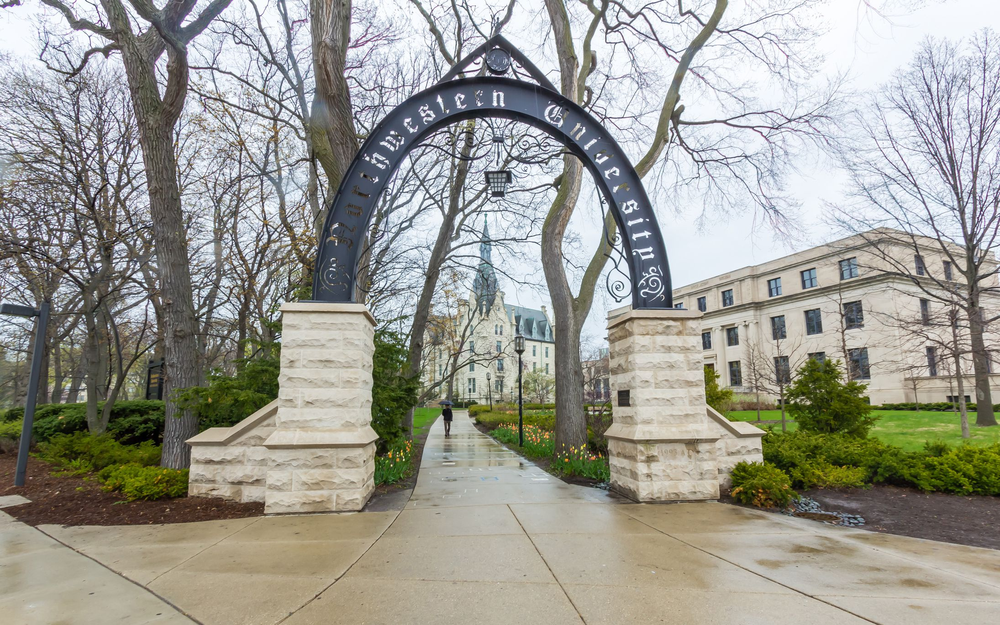

Weng
翁晨凯
About
I'm a second year PhD student at Computer Science Department of Northwestern University. My interest lies in Cryptography and currently I focus on Secure Multi-Party Computation. My advisor is Xiao Wang.
Education
Northwestern University 2019 - present
PhD in Computer Science
Xidian University 2015 - 2019
BSc in Information Security
2017 - Studied Searchable Encryption and Secure Data Deduplication (advised by Jianfeng Wang)
2018 - Interned at Gemini Lab of Alibaba Group.
Publication
QuickSilver: Efficient and Affordable Zero-Knowledge Proofs for Circuits and Polynomials over Any Field
Kang Yang, Pratik Sarkar, Chenkai Weng, Xiao Wang
Wolverine: Fast, Scalable, and Communication-Efficient Zero-Knowledge Proofs for Boolean and Arithmetic Circuits
Chenkai Weng, Kang Yang, Jonathan Katz, Xiao Wang
IEEE Security & privacy (Oakland), 2021 [eprint]
Developing High Performance Secure Multi-Party Computation Protocols in Healthcare: A Case Study of Patient Risk Stratification
Xiao Dong, David Randolph, Chenkai Weng, Abel Kho, Jennie Rogers, Xiao Wang
AMIA 2021 Informatics Summit
Ferret: Fast Extension for coRRElated oT with small communication
Kang Yang, Chenkai Weng, Xiao Lan, Jiang Zhang, Xiao Wang
ACM Conference on Computer and Communications Security (CCS), 2020 [eprint]
Better Concrete Security for Half-Gates Garbling (in the Multi-Instance Setting)
Chun Guo, Jonathan Katz, Xiao Wang, Chenkai Weng, Yu Yu
International Cryptology Conference (CRYPTO), 2020 [eprint]
Contact Me
Address: 3120 Seeley Mudd, Tech Dr, Evanston, IL, 60208
Email: ckweng at u dot northwestern dot edu